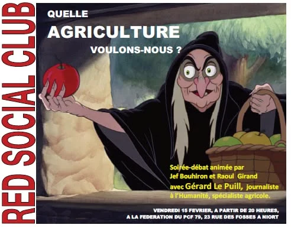

Annonce archivée
15 février 2019. Le Red Social Club au 23 rue des Fossés
Date indiquée par Facebook · 12 février 2019
Repères éditoriaux
Le rendez-vous du Red Social Club était annoncé à partir de 20 h, au 23 rue des Fossés à Niort. Le visuel accompagne l’annonce.
Texte conservé avec la publication
Vendredi 15 février à parti de 20H au 23 rue des Fossés pour cette nouvelle édition du Red Social Club consacrée à l'agriculture.
Débat animé par nos camarades Jeff Bouhiron, Raoul Girand et Gérard Le Puill, journaliste à l'humanité.
Soirée présentée par Francis Lebarbier.

Sources
Archive rouge · export Facebook · AR-0002-FB-02095
À lire aussi · Bonne année 2026 de la part du PCF des Deux-Sèvres